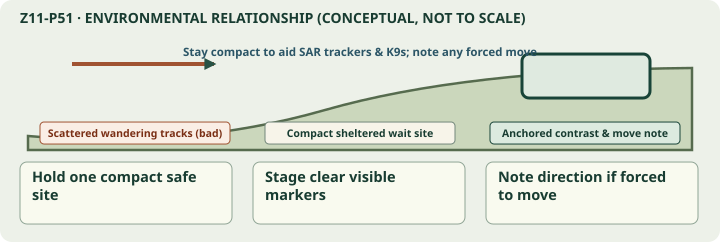

Z11-P51 · Navigation, weather and rescue · New manuscript
Preserve tracks, scent and visual clues when waiting for searchers
Help professional search-and-rescue trackers and K9 teams locate a stationary party rapidly.
When it applies · Lost or overdue hikers waiting in a safe location for search and rescue teams.
Equipment · Bright fabric/tape, stick or snow marker and dry waiting shelter.

Actions
- Stay in ONE compact safe area near a visible opening—every unnecessary walk around the woods lays confusing false tracks and scatters scent trails.[N09, T06]
- Leave clear unmistakable signs of your presence right at your waiting site (bright pack cover or jacket hung visible, large cleared ground mark or boot print preserved on soft earth/snow where safe) without littering or destroying live trees.[N09, K11, ED]
- If immediate danger forces you to shift a short distance to safer ground, leave a clear durable note or directional arrow at the old spot stating time, party size and direction moved.[N09, T06, ED]
Failure recognition · Wandering half a mile away from a visible meadow after hearing a distant helicopter, hiding under dark trees with zero directional note left behind.[N09, T06]
Verify · Confirm your waiting site displays clear visual clues, minimizes scattered wandering tracks and records any forced move explicitly.[N09, T06, ED]
Stop or change course · Never leave an intact safe shelter to chase faint unconfirmed voices or distant engine noise over hazardous terrain—answer loudly with your whistle instead.[N09, T06]
Evidence and editorial notes
- K11 · NPS · Leave No Trace Seven Principles (current web edition)
- Section: Principle 2 and 5 > Low-Impact Construction and Material Use · Conditions: Temporary camp craft and emergency construction on public lands
Support: Avoid cutting live saplings, nailing into live trees or building permanent structures on public lands; dismantle temporary non-destructive lashings and leave natural features intact.
Limitations: Life-safety emergencies differ from routine camp practice but still require hazard-free builds. · Conflicting evidence: Restricts destructive bushcraft construction in routine recreation.
Editorial note: Distinguishes lawful low-impact knots/lashings from destructive camp building. · Specialist reviewer: Land management and wilderness ethics
Primary source · checked 2026-11-24 - N09 · NPS · Outdoor Emergency Plan (current web edition)
- Section: Outdoor Emergency Plan > Signaling, Lost-Person Protocol and SAR Handoff · Conditions: Lost or overdue party awaiting search and rescue
Support: Stay put once lost unless immediate danger requires moving to nearby safer ground; preserve footprints/clues, make visible contrast signals in open clearings, answer whistle/voice calls and stay ready for responder instructions.
Limitations: Unplanned wandering expands search radius exponentially and delays rescue contact. · Conflicting evidence: None; reinforces B014-P16, P17 and P20.
Editorial note: Core evidence for lost-person psychology, signaling and SAR coordination cards. · Specialist reviewer: Search and rescue
Primary source · checked 2026-11-24 - T06 · NPS · Outdoor Emergency Plan (current web edition)
- Section: If you get lost or hurt; call for help · Conditions: Outdoor US emergency
Support: Communicate location, last known point, situation and needs. Stay put when unable to establish a safe route unless immediate danger requires movement.
Limitations: Cell signal is unreliable in backcountry terrain; pre-trip plans bridge communication gaps. · Conflicting evidence: None; core lost-person decision rule.
Editorial note: Foundation for stay/signal/move and dispatch handoff cards. · Specialist reviewer: Search and rescue
Primary source · checked 2026-11-24
Source lineage · NPS outdoor emergency plan; new manuscript · Classification · New manuscript.